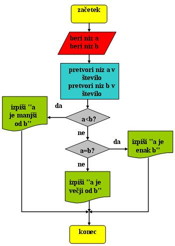
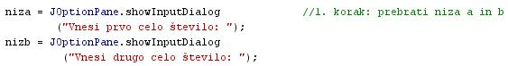
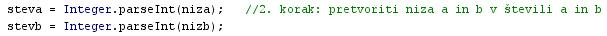
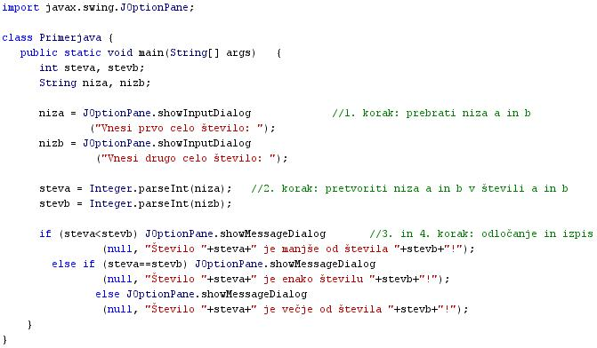

- Diagram poteka je eden od naèinov predstavitve algoritma.
- Diagram poteka se imenuje v angleškem jeziku flowchart.
- Diagram poteka je grafièna predstavitev algoritma.
- Grafièna predstavitev algoritma je predstavitev algoritma z risbo.
- Posamezni koraki algoritma so predstavljeni s posebnimi grafiènimi simboli
- Diagram poteka omogoèa zelo pregleden opis algoritma.
- Pa si spet oglejmo kar primer:
- Besedni opis problema in rešitve.
- "Primerjava dveh števil": Napiši program, ki prebere dve števili ter ugotovi, v kakšnem medesebojnem odosu sta glede na njuno velikost. Vprašamo se, kaj vse bomo morali postoriti za rešitev problema in to opišemo v nekaj stavkih.
- Prebrati moramo obe števili.
- Obe prebrani števili, ki sta še niza, moramo pretvoriti v pravi števili.
- Primerjati moramo števili med seboj.
- Izpisati moramo odgovor.
- "Primerjava dveh števil": Napiši program, ki prebere dve števili ter ugotovi, v kakšnem medesebojnem odosu sta glede na njuno velikost. Vprašamo se, kaj vse bomo morali postoriti za rešitev problema in to opišemo v nekaj stavkih.
- Psevdokoda
- "Primerjava dveh števil": Pri opisovanju problema si pomagamo z besedami, ki spominjajo na ukaze programskega jezika:
- beri niz a in beri niz b;
- pretvori niz a v število a in niz b v število b;
- primerjaj števili a in b med seboj;
- piši rezultat;
- "Primerjava dveh števil": Pri opisovanju problema si pomagamo z besedami, ki spominjajo na ukaze programskega jezika:
- Diagram poteka
- "Primerjava dveh števil": Ukaze psevdokode zamenjajo simboli posameznih korakov algoritma 
- Program (raèunalniški programi)
- "Primerjava dveh števil": Problem opišemo kar s programom v programskem jeziku Java.
- prebrati števili a in b kot niza
- prebrana niza a in b pretvoriti v števili - to storimo z metodo "Integer.parseInt(niz)";
- ugotoviti, ali je a manjši od b, ali je enak b ali pa je veèji od b - to storimo s stavkom "if-else if - else"

- izpis rezultata z metodo "JOptionPane.showMessageDialog()"
- "Primerjava dveh števil": Problem opišemo kar s programom v programskem jeziku Java.
- V okolju za pisanje izvorne kode v jeziku Java, za prevajanje in za interaktivno delo zapiši zgornji program "Primerjava". Pomagaj si s sliko.
- Kodo lahko tudi kopiraš iz te datoteke in jo prilepiš v okolje, v katerem pišeš programèke. Pozor: koda, ki jo boš kopiral/a, vsebuje eno, dve, tri ali štiri napake. Èe želiš, da bo program deloval, moraš napake odkriti in jih odpraviti.
- Izvorno kodo shrani pod imenom "ImePriimek34.java". ImePriimek je seveda tvoje lastno ime in priimek.
- Datoteko "ImePriimek34.java" prevedi.
- Prevedeno datoteko zaženi, preveri rezultat v interaktivnem oknu in poklièi profesorja, da vidi rezultat.
- Preriši diagram poteka v tej uèni enoti v zvezek.
1. Kaj je diagram poteka?
2. Kakšna je angleška beseda za diagram poteka?
3. Kako na prvi pogled prepoznamo diagram poteka? V èem se loèi od besednega opisa, psevdo kode in programa?
4. Koliko korakov vsebuje algoritem v vaji te uène enote?
5. S kakšno barvo je oznaèen posamezni korak algoritma v diagramu poteka v tej uèni enoti?
6. Koliko odloèitev je predvidenih v diagramu poteka v vaji te uène enote?
7. Koliko izpisov je predvidenih v diagramu poteka v vaji te uène enote?
8. Koliko je možnih izidov odloèanja pri posamezni odloèitvi v diagramu poteka v vaji te uène enote? Zapiši jih.
9. V èem se razlikujejo spremenljivke "niza" in "nizb" od spremenljivk "steva" in stevb"?
10. Zapiši metode jezika Java, ki smo jih uporabili v programu te uène enote.
2. Zapiši od ene do pet kljuènih besed, ki povzemajo vsebino te uène enote.
3. Povezave do dodatnih informacij.
Gradiva na spletnih straneh fakultete za matematiko in fiziko v Ljubljani.
Spletni priroènik proizvajalca programskega okolja Java. To je podjetje Sun.
Angleška verzija Wikipedije